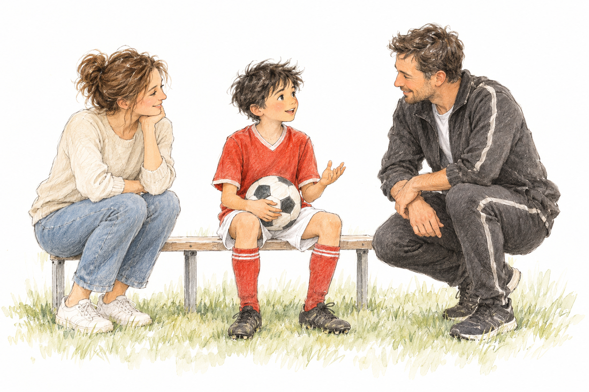

디자인 샘플 · 선수 이력, 측정 점수, 비교 평균, 관찰 기록은 모두 가상 예시입니다.
01 / My quarterly growth review

이번 측정의 8가지 멘탈 포지션
유형 유사도 · 순위나 성공 확률이 아닙니다이 포지션을 떠올리게 하는 선수들
공개된 경기 스타일을 이해하기 위한 예시입니다. 해당 선수의 실제 심리검사 결과나 추천·제휴를 뜻하지 않습니다.
같은 유형이어도 점수와 경기 속 행동은 달라질 수 있습니다. 유형 변경을 승급·하락으로 표현하지 않고, 지난 측정 이후 무엇이 달라졌는지 함께 읽습니다.
변화 그래프·비교 평균 모두 가상 예시 · 각 측정의 동일한 1~6점 척도를 비교합니다.
02 / Change over time
지난번의 나와 비교하고,
지금의 성장단계 안에서 읽어요.
다시 시도하는 힘의 변화
실수 후 회복력실패 후 회복력외부평가 독립성
내 변화와 단계 평균, 나란히 보기
차이 단위: 점| 지표 | 직전 | 이번 | 직전 대비 | 최초 대비 | 현재 단계 평균 | 단계 평균 대비 |
|---|
현재의 5대 지표
이번 측정
성장단계도 함께 기록합니다
숫자와 실제 장면을 함께 봅니다
점수 차이를 통계적으로 유의한 향상이나 프로그램의 효과로 단정하지 않습니다. 측정 때의 피로·수면·경기 경험과 응답 조건을 함께 확인합니다. 추세 그래프에는 완료된 회차만 표시합니다.
가상 샘플 · 선수 이력, 점수, 성장단계·또래 평균은 모두 예시입니다.
03 / A closer look at my mental skills
같은 성장단계와 또래 사이에서, 마음을 세밀하게 살펴요
성장단계 대비
또래 나이 대비
중앙선 = 각 집단의 평균왼쪽 −5점 ← 차이 0 → +5점 오른쪽오른쪽 상태 = 직전 측정과의 비교
세부지표현재 점수 / 6점
성장단계 비교같은 성장단계 평균 대비
또래 나이 비교같은 만 나이 평균 대비
직전 대비이전 측정과 비교
지난 측정과의 연결
아래 목표·실행·관찰 내용은 모두 작성 방식의 예시입니다. 실제 리포트는 선수·보호자·지도자 기록으로 채웁니다.
04 / Our next three months
지난 약속을 돌아보고,
다음 3개월을 함께 정해요.
선수 · 보호자 · 지도자의 관찰
다음 3개월, 함께 이어갈 행동
점수 목표보다 실천할 행동01
선수의 작은 연습
실수 뒤 숨을 내쉬고 다음 위치로 움직입니다. 훈련이 끝나면 다시 참여한 장면 하나를 남깁니다.
02
보호자의 피드백
주 1회 “다시 해본 순간이 있었어?”라고 물어봅니다. 결과보다 실제로 시도한 행동을 짚어줍니다.
03
지도자와의 연결
한 달에 한 번 같은 행동을 관찰합니다. 출전 기회·훈련 변화·몸의 불편함을 함께 메모합니다.
Small steps, shared over time
점수만 남기지 않고,
아이의 경험을 함께 쌓습니다.
성장단계 · 몸의 변화 · 다시 시도한 행동을 같은 기록 안에서 이어갑니다. 다음 측정에서는 지난 목표와 실제 경험을 먼저 돌아봅니다.

다음 3개월 리뷰
일정은 선수·보호자·지도자와 조율합니다.
다음 리포트에 함께 가져올 기록
같은 문항·응답 조건으로 측정한 점수최근 성장단계와 체격의 변화지난 목표를 실행한 장면훈련·수면·출전 환경의 변화
측정→ 한 가지 목표→ 경험 기록→ 3개월 리뷰
이 샘플은 3개월 반복 측정 리포트의 구성안입니다. 반복 기록 연결은 고유 선수 ID를 기준으로 하고, 비교 집단과 집계 시점을 기록해 기준 변경을 구분하는 방식으로 운영합니다.